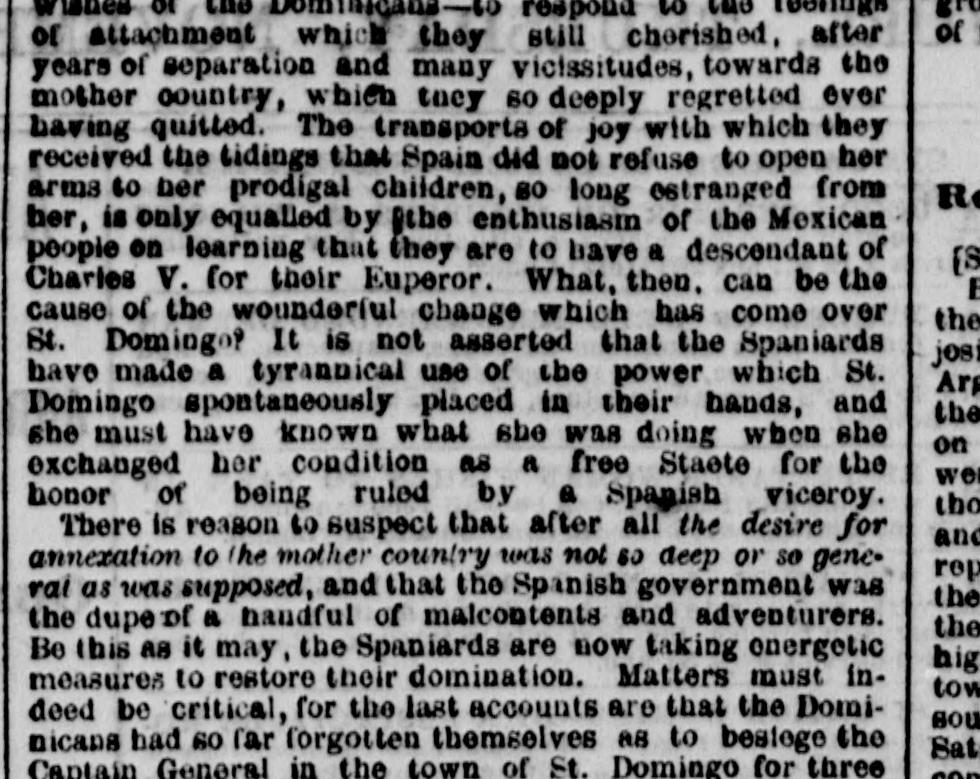
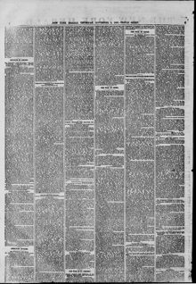

Annexation lo 'he mother country ttu not so deep or soLa anexión a la madre patria no tan profunda ni tan
The New York Herald. New York [N.Y.], November 5, 1863. Page 2. View the originalVer el original


See the full pageVer la página completaThe New York Herald reported that Dominican support for Spanish annexation had proven illusory as insurgent forces besieged Spanish authorities in Santo Domingo and established a provisional government in Santiago. Spanish garrisons faced heavy combat and casualties, the Spanish governor retreated to ships, and General Santana fled to the woods of Azua under pursuit by insurgent commanders.The New York Herald informó que el respaldo dominicano a la anexión española resultó ser ilusorio, toda vez que las fuerzas insurrectas sitiaron a las autoridades peninsulares en Santo Domingo e instauraron un gobierno provisional en Santiago. Las guarniciones españolas afrontaron duros combates y abundantes bajas, el gobernador español se replegó a los buques y el general Santana huyó a los montes de Azua perseguido por los jefes insurrectos.
FULL TEXT:TEXTO COMPLETO:
of attachment which they still cherished, after years of separation and many vicissitudes, towards the mother country, which they so deeply regretted ever having quitted. The transports of joy with which they received the tidings that Spain did not refuse to open her arms to her prodigal children, so long estranged from her, is only equalled by the enthusiasm of the Mexican people on learning that they are to have a descendant of Charles V. for their Emperor. What, then, can be the cause of the wonderful change which has come over St. Domingo? It is not asserted that the Spaniards have made a tyrannical use of the power which St. Domingo spontaneously placed in their hands, and she must have known what she was doing when she exchanged her condition as a free State for the honor of being ruled by a Spanish viceroy.de apego que todavía abrigaban, después de años de separación y muchas vicisitudes, hacia la madre patria, que tan profundamente lamentaron haber dejado alguna vez. Los transportes de gozo con los cuales recibieron las noticias de que España no se negaba a abrir sus brazos a sus hijos pródigos, tan largamente alejados de ella, solo son igualados por el entusiasmo del pueblo mexicano al saber que han de tener un descendiente de Carlos V. por su Emperador. ¿Cuál, entonces, puede ser la causa del cambio maravilloso que ha sobrevenido a Santo Domingo? No se afirma que los españoles hayan hecho un uso tiránico del poder que Santo Domingo espontáneamente colocó en sus manos, y ella debe haber sabido lo que estaba haciendo cuando cambió su condición de Estado libre por el honor de ser gobernada por un virrey español.
There is reason to suspect that after all the desire for annexation to the mother country was not so deep or so general as was supposed, and that the Spanish government was the dupe of a handful of malcontents and adventurers. Be this as it may, the Spaniards are now taking energetic measures to restore their domination. Matters must indeed be critical, for the last accounts are that the Dominicans had so far forgotten themselves as to besiege the Captain General in the town of St. Domingo for threeHay razón para sospechar que después de todo el deseo de anexión a la madre patria no era tan profundo o tan general como se suponía, y que el gobierno español fue el engañado de un puñado de descontentos y aventureros. Sea esto como fuere, los españoles están ahora tomando medidas enérgicas para restaurar su dominación. Los asuntos deben en efecto ser críticos, pues las últimas cuentas son que los dominicanos se habían olvidado de sí mismos hasta el punto de sitiar al Capitán General en el pueblo de Santo Domingo por tres